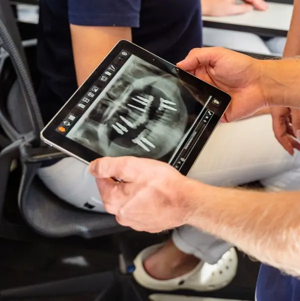

Sicherer Halt – wie echte Zähne
Nichts wackelt, nichts drückt. Implantate sitzen fest im Kiefer und fühlen sich vollkommen natürlich an.
Zentrum für Biologische Zahnmedizin in Balingen
Ihr strahlendes Lächeln mit hochwertigen, 100 % metallfreien Zahnimplantaten. Wieder unbeschwert lachen, sprechen und essen – ein Leben lang, ohne Einschränkungen.
Oder rufen Sie uns direkt an: 07433 5811


Warum sollten Sie sich für Zahnimplantate entscheiden?
Wenn Zähne fehlen oder Zahnprothesen nicht richtig sitzen, kann das den Alltag stark beeinträchtigen. Mit Zahnimplantaten gewinnen Sie Lebensqualität zurück.
Nichts wackelt, nichts drückt. Implantate sitzen fest im Kiefer und fühlen sich vollkommen natürlich an.
Endlich wieder herzhaft zubeißen – egal ob knackiges Obst oder ein gutes Steak. Genießen statt verzichten!
Keine Sorge mehr vor peinlichen Momenten – alles bleibt dort, wo es hingehört.
Implantate sind nicht nur langlebig, sie verhindern auch Knochenabbau und erhalten Ihre natürliche Gesichtsform.
Ihre Möglichkeiten im Überblick
Beide Materialien haben ihre Berechtigung – doch sie unterscheiden sich deutlich. Scrollen Sie durch den Vergleich und sehen Sie, warum wir auf Keramik setzen.
Obwohl Metallimplantate häufig zum Einsatz kommen, weisen sie bestimmte Einschränkungen auf.
Titan ist ein Metall. Bei manchen Menschen kann es zu immunologischen Reaktionen kommen – wissenschaftlich noch nicht vollständig geklärt.
Ist das Zahnfleisch sehr dünn, kann das Metall durchschimmern und optisch stören.
Die raue Oberfläche von Titan bietet Mikroorganismen mehr Halt – das kann Entzündungen begünstigen.
Zusammen mit anderen Metallen im Mund kann es zu unerwünschten Reaktionen kommen.
Titanimplantate sind meist etwas günstiger, da Herstellung und Material weniger aufwendig sind.
Wenn keine Unverträglichkeiten bestehen, ist Titan seit Jahrzehnten eine solide und langlebige Option.
Deshalb setzen wir auf Keramik
Wegen genau dieser Nachteile wurden Implantate aus Zirkonoxid-Keramik entwickelt und ständig verbessert. Heute sind sie ein bewährter Standard in der Biologischen Zahnmedizin – für alle, die Sicherheit und Ästhetik verbinden möchten.
Die moderne, biologischere Alternative – für alle, die Sicherheit und Ästhetik verbinden möchten.
Keine Fremdreaktionen – der Körper erkennt Keramik als neutral an.
Durch die helle Farbe fügt sich das Implantat unauffällig ins Gebiss ein – keine grauen Ränder.
Langzeitstudien zeigen: Keramik bleibt formstabil und verändert sich nicht.
Weniger Bakterienanlagerung = geringeres Entzündungsrisiko.
Kein metallischer Geschmack, keine Spannungseffekte.
Keramik ist aufwendiger in der Herstellung, bietet dafür jedoch höchste Biokompatibilität und Ästhetik.
| Auf einen Blick | Titan | Keramik |
|---|---|---|
| Metallfrei | ✗ Nein | ✓ Ja, 100 % |
| Optik bei dünnem Zahnfleisch | ✗ Grauer Schimmer möglich | ✓ Zahnfarben, unauffällig |
| Bakterienanlagerung | ✗ Erhöht (raue Oberfläche) | ✓ Gering |
| Wechselwirkung mit anderen Metallen | ✗ Möglich | ✓ Keine |
| Immunologische Reaktionen | ✗ Nicht ausgeschlossen | ✓ Körper erkennt Keramik als neutral |
| Langzeitstabilität | ✓ Bewährt | ✓ Formstabil laut Langzeitstudien |
| Kosten | ✓ Günstiger | Höheres Investment |
Unsicher bei der Materialwahl?
Video
Christian Zotzmann erklärt in wenigen Minuten,
worauf es bei der Materialwahl ankommt.

Das sagen unsere Patienten
Echte Patienten, echte Geschichten – im Interview mit Zahnarzt Zotzmann.

Autounfall … es muss von den Zähnen kommen
★★★★★
… die Entzündungen sind alle weg.
★★★★★
Ich bereue es nicht, dass ich mich für die Praxis entschieden habe. Es war ein sehr guter Weg für mich.
★★★★★… von Anfang an war klar, er nimmt mich ernst.
★★★★★… ganz anderes Lebensgefühl als vorher.
★★★★★Google-Bewertungen
★★★★★ 4,8 von 5 Sternen · über 100 Bewertungen auf Google
Warum gerade diese Zahnarztpraxis?
Zahnarzt Zotzmann in Balingen – moderne Zahnheilkunde trifft ganzheitliche Medizin.
Ihre Experten für Implantologie, Zahnheilkunde und Prophylaxe. Wir verbinden moderne Zahnmedizin mit natürlichen Verfahren – für schöne Zähne und nachhaltige Gesundheit. Unsere Praxis liegt im Herzen von Balingen im Zollernalbkreis und ist gut erreichbar aus Albstadt, Hechingen, Bisingen und Umgebung.


Unsere Spezialgebiete

Warum sich Patienten für Christian Zotzmann entscheiden
Mit über 10 Jahren Erfahrung und mehreren tausend erfolgreich durchgeführten Implantationen ist Christian Zotzmann Ihr Spezialist für langlebige, ästhetische Zahnimplantate.
Noch unsicher?

Ursachen behandeln, nicht nur Symptome
Kranke und tote Zähne können schwerwiegende chronische Erkrankungen verursachen und sollten deshalb entfernt werden. Das bringt allerdings einige Nachteile mit sich:
Die Lösung: Ein bioverträgliches Keramikimplantat ersetzt den Zahn vollständig – von der Wurzel bis zur Krone – und erhält den Kieferknochen.
Kennen Sie das?
… und suchen jemanden, der sich Zeit nimmt, Ursachen ermittelt, Zusammenhänge verständlich erläutert und Wege zu mehr Vitalität und Lebensqualität aufzeigt.
Ihre Vorteile bei uns
Wir nehmen uns Zeit, hören zu und erklären Zusammenhänge verständlich.
Für bessere Körperverträglichkeit und Ästhetik – 100 % metallfrei.
Für einen metallfreien Mund – mit umfassenden Schutzmaßnahmen.
Erfahrung in der Implantologie, die Sie spüren – bei jedem Schritt.
Volldigitales Dentallabor im Haus – so kommt alles aus einer Hand.
Wir nutzen in unserer Praxis die Prinzipien der Biologischen Zahnmedizin.
Neupatient werden
Füllen Sie zuerst kurz unser Formular aus. Danach begleiten wir Sie Schritt für Schritt.
Ein kurzes und unverbindliches Telefonat mit unserer Mitarbeiterin, um Sie ein wenig besser kennenzulernen und Ihr Anliegen einordnen zu können – sodass Sie sich eindeutig für uns entscheiden können.
Beratung in der Praxis mit erster Diagnostik (3D-Röntgen, Störfeldanalyse …) und Besprechung Ihrer aktuellen Situation. Darauf aufbauend erstellen wir Ihre individuelle Therapieplanung inklusive Kostenübersicht.
Ihr Keramikimplantat wird schonend und präzise gesetzt – auf Wunsch in Sedierung. Zahnersatz aus dem eigenen Labor, regelmäßige Kontrolle und Prophylaxe sichern das Ergebnis langfristig.

Bereit für Schritt 1?
Unsere Antworten auf Ihre Fragen
Noch unsicher?
In einem kostenlosen 15-Minuten-Telefonat klären wir Ihre Fragen und ob Keramikimplantate für Sie die richtige Lösung sind.
Oder rufen Sie uns direkt an: 07433 5811